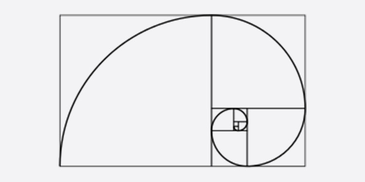
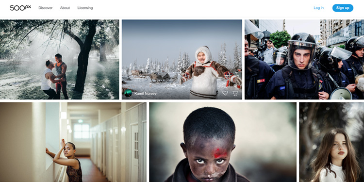

第一章：可能是最难的一课
| 本文为付费栏目文章，您已订阅，可阅读全文 |
欢迎回来
这是本教程的第一章，我们要正式开始了。序言的结尾说到，我们所用的软件和工具都不是最重要的，审美才是重中之重。凭借较高的审美水平，任何软件都可能做出好看的东西。第一章，就来讲讲「提高审美」这个最根本的问题该如何解决。
用针管儿写书法算不算书法家？
前段时间各社交平台上流行这样一个短视频。
喷射墨水的「书法家」
视频中这位「书法大师」正在使用针管儿喷射墨水，加以自己颇有韵味的身体移动完成一个独特的作品。其技法之独特，连举纸的女士都不禁笑了出来，也引来了专业和非专业人士的讨论。那么请问：你认为用针管儿写字到底算不算书法家？
回答这个问题，你需要的是审美能力。审美，又称感觉学，是以对美的本质及其意义的研究为主题的学科，总的来讲是人类理解世界的一种方式。拥有审美代表着你可以理解一个事物为何美，好的东西为何好。
回到「用针管儿写字算不算书法家」的讨论，这个问题并没有标准答案。需要的是你自己的理解、观点，以及支撑。你可以认为射墨书法是行为艺术，可以认为它是书法实验，也可以认为是纯粹的闹剧，只要有你自己的观点和理由。
某策展人对射墨书法家的评论是「是对书法的探索，形式上并不能算作原创，更像是行为表演」。可以看出，策展人首先给出了定位，又从形式上进行了分析，在否认「针管射墨」是书法的同时又抨击其并非原创，满是道理。而我们作为普通人无非是转发一条微博，配上「哈哈哈」而已。为什么我们无法对射墨书法家做出定性和分析？为什么我们与「某策展人」会有审美能力上的差别，甚至越差越多？
什么左右了我们的审美？
我们的审美水平会受到各方个面的影响。对于大多数人来说，不是你选择了某个审美，而是你所处的环境塑造了你的审美。我们可以将环境影响分为两类，一类是几乎所有人都会受到的大环境影响，另一类是只有一部分人会受到的小环境影响。
被大环境影响
被大环境影响的审美是所有生存于文明社会的人都会受到的，分别来自人类本身和社会不断发展带来的审美变化。被大环境影响的审美是主流的审美，是很难改变的审美，也没有必要背道而驰。跟随主流的审美，你的设计就能被大众接受。下面是几个大环境影响审美的例子：
人类本能影响
你一定听过「黄金比例」，它是一种独特的视觉平衡感。在人们发现了黄金比例之后，将其套用在已有的艺术作品甚至自然界的动植物中，发现很多视觉上令人愉悦的事物都符合黄金比例。而黄金比例背后的原理，是数学。黄金比例其实是一个数学常数，约为 1.618。

黄金比例
数学之美不仅体现在视觉上，音乐的背后也有数学基础。发现勾股定理的哲学家毕达哥拉斯发现「五度相生律」：取一基准音（比如 C），频率升高 3/2，即可得到下一个音（G）。依此类推可以得到我们熟悉的七声音阶。五度相生律是人类第一个主流音乐律法。
五度相生律
毕达哥拉斯和他的学派认为数学可以解释世界上的一切事物，对数字痴迷到几近崇拜；同时认为一切真理都可以用比例、平方及直角三角形去反映和证实。以此可见艺术与数学息息相关，这种美感可以让所有人产生共鸣，是全人类无意识共享的审美。
社会环境影响
二战结束后，横须贺市成为驻日美军军港。横须贺市生产丝绸和刺绣制品，许多驻日美军给自己的飞行夹克加上了日本特色的刺绣设计。而这种有刺绣的飞行夹克被美军带回美国，成为「横须贺夹克」。这种夹克的诞生就是由于两种社会环境互相交融，对审美产生了影响。
二战时期的横须贺夹克（左）；Kanye West 穿着横须贺夹克（右）
审美方向影响
人类社会的整体审美追求方向也在不断发生着改变。
拿绘画举例，现代主义艺术是不断走向抽象的过程。在抽象派出现之前，画家的追求是去记录真实世界的一个定格，大家认为画的越真越好，着迷于光影与细节的刻画；随着绘画与科技的不断进步，审美方向不再追求去画得非常像，转而发展出更多抽象的风格去表达。而至今，绘画世界不再有一个主流的审美或艺术运动，人们各持己见，欣赏自己喜欢的风格。
不同时期的绘画风格对比
被小环境影响
除了几乎在文明社会共同接触的大环境影响，我们自身所处的小环境才是真正让我们与他人产生审美差距的原因。我们所处的地方，接触的人，获取的信息共同组成了我们生存的小环境。来看几个例子。
所处的地域
一个有趣的例子，是股票涨跌的颜色表示。大家都知道，股票增长是红色，下跌是绿色。所以我们会盼望红色，厌恶绿色。而在国外的大多地方，绿色是上涨，红色才是下跌。下面是 Google 同时间搜索同一支股票在中英文界面下的不同展现：
股票查询结果在中文和英文下的显示对比
这种红涨绿跌的色彩系统影响到了其他数据展示的习惯：比如微信的公众平台的数据统计中就会用红色作为上涨颜色，绿色作为下跌颜色。中国股票的这套颜色系统潜移默化影响了我们对色彩的审美，且根深蒂固在许多国人的心中。如果在哪里看到了绿色表示上涨，你可能要停下来确认一下自己有没有看错。
这表明当一个人长时间在同一个地方生活，他对特定事情的判断就被他所处的地方塑造了，进而审美也被塑造了。
身边的人
关于这一点，相信各位最有体会。我国很多初中高中都有「男生寸头，女生齐耳短发」的发型要求，甚至一些着装要求，只有「艺术生」可以打破规定。发型要求的本质，即是通过规定限定了所有学生的审美，使每个学生都接触同样的审美，也就是学校要求的审美。
全国普遍的发型样板
从学校方面来讲，这种审美限制是为了让学生「更加专注于学习」，但于此同时有很大的负面影响：且不谈发型规定能否让学生在这个信息剧增的时代更加专注于学习， 发型规定直接让我们缺少了打理形象的可能，进而少了培养自我审美的机会。广大被限定审美的同学，只有到走出高中才能够拥有自我审美的自由，长此以往的严格规定让很多人的穿着和外貌审美都有所滞后。
获取的信息
两三年前你可能听过「亚洲四大邪术」——泰国变性术、韩国整形术、日本化妆术和中国美图术。不过现在来看我国的化妆术也有了长足的发展，达到了卸妆不认人的水平。而这种进步很大得益于国内互联网上大量「美妆博主」的涌现。
bilibili 上的美妆博主
美妆博主将自己化妆的手法做成教学演示视频发布在网上，而看客则花大量的时间去看所谓会化妆的人是如何化的，渐渐的国人的化妆术也能列入「邪术」之列。这个过程的本质即是信息获取：美妆博主诞生即是一种信息渠道的诞生，这样的信息渠道让获取「如何化妆」的信息变得非常简单，于是观众们就会花大量的时间获取美妆相关的信息，化妆水平便提高了。
同理，如果我们给自己的「审美水平」打造一个「美妆博主」，提高审美水平似乎也不是一件难事，下面就来聊聊如何拿回审美自主权。
如何拿回审美自主权
拿回审美自主权即是我们自己塑造自己的审美，与小环境对我们的影响做抗争。拿回审美自主权可以分为两点：进行有独立意识的日常积累；给自己创造一个更好的小环境。
有独立意识地做日常积累
拿回审美自主权的重要一步是做日常积累，我的建议就是不停地去看他人的作品，并且在看作品的过程中要有独立意识。那么什么是独立意识呢？
此处引用一句被引用烂了的名言「Bad artists copy; Great artist steal.」我认为这句话表诠释了两种「学习他人」的区别：坏的「学习他人」是抄袭只停留在表面；而好的「学习他人」可以将他人的作品吸收并创造新的东西。我们有独立意识地做日常积累，不是为了观察视觉的表象，而是通过观察外表探寻其本质，好的东西为什么好。下面就来看一个不太好的例子：
iPhoneX（右）与其模仿者（左）
2017 年 iPhone X 的发布让手机行业掀起一波刘海的潮流，其他品牌纷纷效仿。但问题在于 iPhone X 的刘海其中有非常多的传感器，而大多数品牌只学到了其外观，刘海背后还只是普通的前置摄像头而已，这便是停留在表面的抄袭。那么，好的例子是什么呢？

鲨鱼与鲨鱼皮游泳衣
这是著名的鲨鱼皮游衣，由于能够大幅度加快游泳速度已经被国际泳联禁用。鲨鱼皮泳衣的设计者发现鲨鱼皮肤表面粗糙的 V 形皱褶可以大大减少水流的摩擦力，使身体周围的水流更高效地流过，鲨鱼得以快速游动。这种游泳衣的表面便是模仿鲨鱼皮的表面结构，大幅度加快运动员的游泳速度。
停留在表象的学习和通过观察外表学习本质的差别非常大，有独立意识地观看他人的作品是避免我们停留在表象的关键。除了正确的日常积累方式，我们也需要给自己创造一个小环境，去除环境对我们不好的影响
创造小环境
创造自己的小环境，避免所处的地方，接触的人和收到的信息带偏你的审美。
对于所处的地方，你简单到换一家常去的咖啡厅，换个城市生活，你也可以去各地游历感受各地的文化差异，甚至多转转宜家、无印良品也是一种环境塑造。如果你没有时间，也可以通过互联网间接了解与自己所处环境不同的风土人情。
至于接触的人，一夜之间让我们的亲友变得优秀是不太可能，但你可以去寻找身边你认为对美感有要求的「讲究人」，和他们沟通交流会有所收获。
对于所接触到的信息，建议你整理自己日常的信息获取流程。首先排除营养低的，留下质量高的；不断发现适合自己的新信息源。最简单的办法就是直接去浏览别的人作品，不一定是平面设计，任何设计作品都可以，因为你永远不会知道灵感会从什么奇怪的东西上突然蹦出来。而这就是下面我要和你分享的：
我是如何做日常积累的？
思而不学则殆，下面是我做「日常积累」的一套资源，分享给大家。按照执行方式分为：信息流类、RSS 类、Newsletter 类等三种类型。希望能够给你以启发，早日建立属于你自己的信息获取流，并不断积累。
第一类：信息流
信息流类的资源可以像刷微博或者知乎一样，随时拿出来看一下，利用空闲的碎片时间源源不断地积累，量变达到质变。另外，当你想了解一个特定领域或者特定的课题时也可以把他们当做搜索引擎使用。信息流类的网站，我有四个推荐给你：
1. Dribbble：短平快作品展示平台
Dribbble 是一个给创意工作人群提供作品展示的服务，专注于插画、平面与界面设计领域。一些公司的设计团队（比如 Google、Uber、Facebook……）以及设计工作室（Ideo、IconFactory……）也在上面分享作品。设计师可以在上面发表作品，所有人都可以查看和互动。其特点是内容轻量，每条作品只有一张图的展示空间，也没有太多文字叙述的空间。
Dribbble 首页
Dribbble 是我认为用起来最像微博的作品展示平台，由于一张图的限制，很多作品本身都只能算是「一瞥」，我习惯在手机上一屏显示八个作品，快速浏览，以量制胜。
Dribbble for iOS
2. Behance：丰富且详细的作品展示平台
Behance 与 Dribbble 类似，是 Adobe 旗下的作品分享平台。相比 Dribbble，Behance 更加「重量级」。首先是艺术领域覆盖更广，比如除平面和插画之外还有工业设计，建筑设计以及服装设计等领域；其次单条作品可以承载更多的信息，你可以在 Behance 上面看到极其完整的系统设计和设计流程，甚至会有案例学习。
Behance 首页
Behance 也是我每天必看的作品平台。由于 Behance 上面的作品内容更加翔实，我会先快速浏览信息流，遇到喜欢的或者很火的作品再点开来仔细研究。再顺藤摸瓜找到作品的设计师，去看该设计师的其他作品。你可以在同一设计师的主页下找到许多作品，试图寻找这些作品的共同优点便能了解「某人的作品为何好」，而不是局限于表面的形态。

Behance 详情页
3. Pinterest：收藏与探索工具
Pinterest 看上去是一个无止境的图片瀑布流，它的内容来自用户浏览网页时的手动收藏。所以理论上 Pinterest 上面的内容都是经过用户筛选，视觉美感有保证的。我个人习惯使用手机 App，平时随意刷一刷，需要了解某个特定领域的设计时当做搜索引擎使用。即使用 Google 和 Pinterest 搜索同样一个关键词，Pinterest 搜到的图片也会比 Google 搜出来的图片更加好看。同时，你还可以把 Pinterest 当做你的收藏夹，养成积累的习惯。
Pinterest 主页
4. DeviantArt：画家和艺术家的领地
DeviantArt 是一个为艺术家展示各自作品、并交流讨论而设计的社交网站，内容以绘画为主。
我浏览 DeviantArt 的频率并不高，经常是没有灵感了或者做设计做得没有精神时用来放松的。设计看多了，来看看艺术开阔眼界。
DeviantArt 主页
第二类：RSS
你可以通过 RSS 的方式来订阅一些网站的内容，这样无需访问网站就能获得更新的信息，对阅读效率有很大的提升。对于 RSS 资源，我习惯每天早上或者通勤时打开手机的 RSS 阅读器，比如 Inoreader，Reeder 先粗略看一下标题，发现感兴趣的内容后再点进去看全文。这样不会造成资讯重复，长此以往也可以养成习惯。下面给大家分享三个支持 RSS 订阅的设计新闻类网站，让你更快的获得业内的资讯以及风向：
1. Design Milk
Design Milk 是一个汇集建筑、艺术、家居、科技、旅行等各个设计领域的新闻网站。我主要用来扩展视野和灵感，其中介绍的产品大多和设计紧密相关，便于从其他设计领域得到启发。
Design Milk 首页
2. BrandNew
BrandNew 是一个专门报道标志改版的网站，哪个品牌找了哪个工作室做了标志改版这里几乎都能找到。虽然 BrandNew 是专门针对 Logo 设计细分领域的网站，但我认为 Logo 设计的本质是如何用一个图形和有限的字数传达出品牌形象，既要有辨识度还要有记忆点又要符合品牌调性，这些问题也正是平面设计要解决的问题。所以我们可以通过观察 Logo 的设计变迁来学习其设计思路，从而有益我们学习平面设计。
BrandNew 首页
3. FastCompany Co.Design
Co.Design 是 FastCompany 旗下的设计板块，这里的设计报道一定都和商业挂钩，而且「设计」更加广义，它有可能是一个商业计划、数据分析、实地考察等等。看 Co.Design 能够增长你的商业嗅觉，也能提升你对「好设计」的定义，不仅仅局限于好看就是好设计。比如 迪士尼乐园背后的心理学设计分析，AI 设计的椅子会是什么样的等等。
Fast Company Co.Design 首页
第三类：Newsletter
除了上面这些平台类的网站，经常看一些工作室的 Newsletter 也是不可或缺的。（Newsletter 是电子时代的报纸，用户使用邮箱订阅，通过邮箱发送）许多工作室不会在作品展示平台上更新自己的作品，Newsletter 是得知他们动态和思考的最快方式。以下给大家推荐四个优秀的工作室和他们的 Newsletter：
1. Pentagram
Pentagram 是一家老牌的设计工作室，是苹果的设计书《Designed by Apple in California》的设计者，三星 Galaxy S8 的用户界面、DC 漫画的品牌形象更新也是他们家的作品。他们的业务涵盖了传统的印刷品设计，品牌设计以及界面设计，而且有非常多的传奇设计师曾在 Pentagram 工作。Pentagram 的作品给我的印象就是「稳」，即使不是一个充满亮点的作品，也很难挑出毛病来。
Pentagram 部分作品
2. ueno
ueno 是我个人非常喜欢的数字设计工作室。ClearMotion 的官网和 Slack 官网设计都是出自他们之手。ueno 的风格干净简单，非常擅长做数字产品的品牌设计。不过 ueno 给我最深的印象是动效，他们的作品只看动效就能让你大呼过瘾。
ueno 部分作品
3. Dine
Dine 设计过端传媒和好奇心日报的网页端和移动端，他们的设计都很有气质。他们的 Newsletter 的质量也相当高，每一期会聚合一段时间的新闻和许多优秀作品，值得仔细研读，甚至成为了我查看邮件的理由之一。
Dine 部分作品
4. Anyway.fm
Anyway.fm 不是一家工作室，而是一个由 JJ Ying 和 Leon Gao 组成的设计类播客栏目。这家播客的 Newsletter 名为「安妮薇邮报」。安妮薇邮报每期有很多干货，包括但不限于文章推荐、设计工具和专题研究。同样也是每期必看。
安妮薇邮报
我是如何打造小环境的
上文提到小环境分为所处的环境、接触的人和获取的信息三个方面。我的方法是去发现自己环境意外的文化、接触更多艺术形式、养成留意生活的习惯。下面给大家分享六个具体做法：
1. 关注文化媒体
一些以设计与艺术为主题的媒体非常值得关注，即使不能直接借鉴，当个读物也算是一种享受，我有两个网站推荐给大家抛砖引玉：
VOICER 首页
VICE 中国首页
2. 了解摄影
摄影中的「构图」与平面设计中的「排版」有异曲同工之妙，当然这并不只是两者唯一的共通之处。你不一定要精通摄影或买个相机，浏览 500px 和 Flickr，或者如一闪这样高质量的图片分享社区也是很好的选择。

500px 首页
3. 关注艺术
虽然设计脱胎于艺术，但两者已经被分得越来越开。艺术更多的在于表达，而设计在于解决问题，但两者的根本都是「审美」。这样一来，一些画作、表演、书法等等艺术形式都可以成为可以学习的对象。在互联网上， Deviantart 和 Artsy 上有不少纯艺术作品；现实中我推荐你留意身边的各类艺术展览、演出以及电影。消遣的同时可以提高审美，增添灵感。
4. 玩游戏
电子游戏被称之为「第九艺术」（八大艺术包括：绘画、雕塑、建筑、音乐、文学、舞蹈、戏剧、电影）其中集合了多个类别的艺术与设计领域。为了构建一个好的游戏，每个设计领域都要考虑到位，是各类艺术与设计交集最多的形式，比如说：《命运2》的游戏界面为了提高手柄操作效率做了许多优化；《塞尔达：旷野之息》中的地形设计可以提高玩家的好奇心从而增加游戏性……
《命运2》与《塞尔达：旷野之息》的游戏设计讲座
电子游戏确实结合了许多设计师和艺术家的智慧。当然，玩哪款或者说哪种游戏是非常重要的，我强烈推荐以提高审美的名义买一台 Nintendo Switch 或者 PlayStation4 玩玩。当然不可否认的是移动平台也有越来越多画面精美、体验讲究的游戏，比如纪念碑谷、奥托的冒险、Limbo 等等。
5. 留意一切事物
作为设计者，我们需要对生活的感知能力；作为业余的设计者，我们需要有感知生活的意识。小环境的最后一点便是留意一切事物。你是否想过这些问题：
- 交通灯为什么是红绿黄三种颜色？
- 麦旋风勺子上的钩子是做什么用的？
- 人为什么在夜里矫情？
这些问题的背后便是平凡事物背后的原理，而探寻这个原理的过程正是我们审美提高的过程。你见过的任何形式的艺术都可以去学习与借鉴，生活中任何微小的问题都值得去思考，身边的一切都可能是灵感的来源。就像说唱歌手即兴演唱时多多少少都会套词一样，只有足够多的日常积累，必要的时候才能有输出。
推荐阅读
推荐阅读是本教程每章教程的结尾环节，会推荐与本章相关的文章或书籍资料。旨在对每章教程的内容进行扩展，为想要深入学习的同学指路。你可以按照自己精力与目的，按需索取。第一章，我们推荐一本书和一个看上去非常古老的网站：
《设计中的设计》——原研哉
《设计中的设计》是由无印良品设计总监原研哉编写的设计书籍，其包含了原研哉的一些作品展示以及他对其他领域设计的思考，包含了平面设计、工业设计等学科。书中剖析的案例非常经典，原研哉的观点深入且独特。
《设计中的设计》是我进入设计领域的启蒙书籍，非常适合刚刚接触设计的同学开阔眼界，去了解和学习「设计思维」。原研哉的语言中没铺天盖地的专业词汇，而是从第一人称并结合情感一点一点讲出每个设计故事和背后的想法，是适合所有人阅读的设计书籍。
An Introduction to the Graphic Design History（英文）
以史为鉴是我们接触一门新知识的好办法，平面设计的发展历史亦是大环境审美变迁的一部分。An Introduction to Graphic Deisgn History 是一个非常全面的线上版本平面设计史，可以了解平面设计从印刷厂房到一台电脑的变迁。其中资料详细，案例众多，建议有时间的同学读一读。

结语
以上，便是第一章的全部内容。只需持续的积累便对我们的审美带来质的提高。希望你可以构造自己的小环境和信息源，不断积累提高审美。不要觉得困难，毕竟这是最难的一课。 接下来，我们将进入平面设计基础知识的学习，下一章从区分英文字体开始，了解「设计师眼中的字体是什么样的」，我们下章见。
上一期
下一期